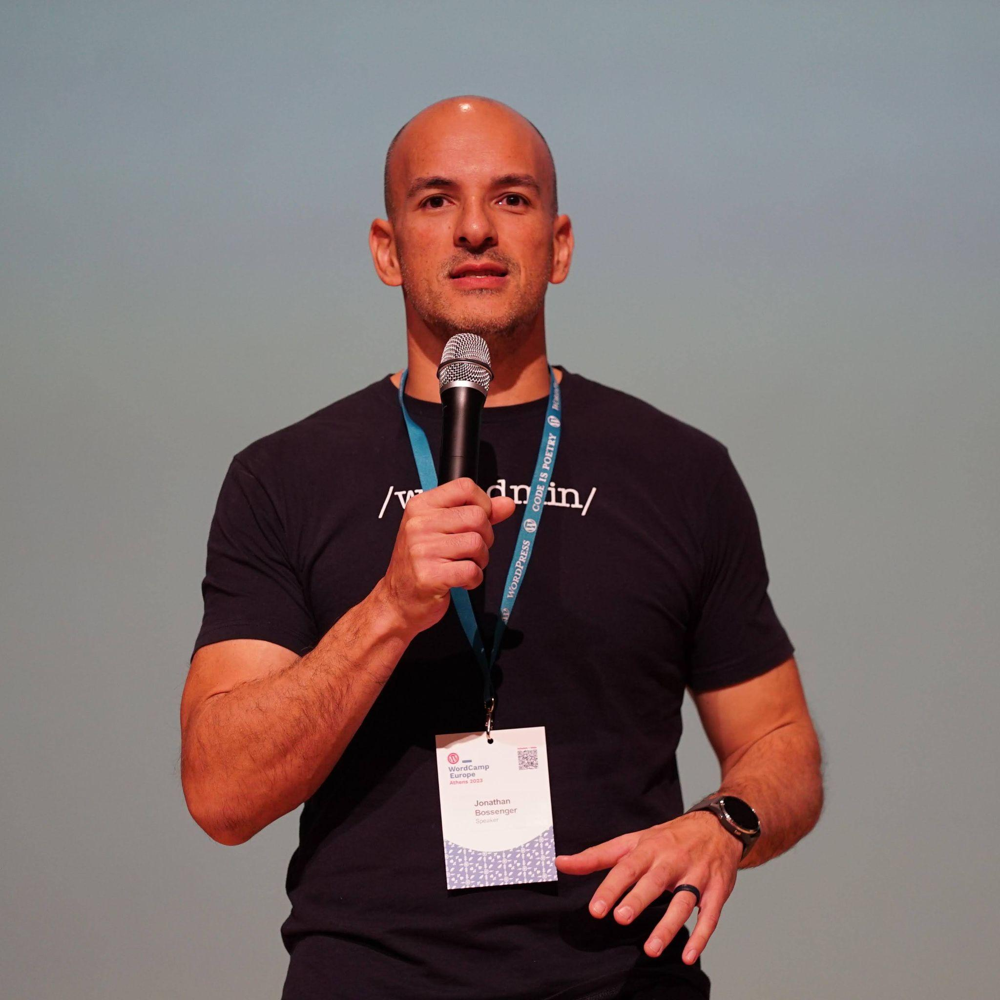
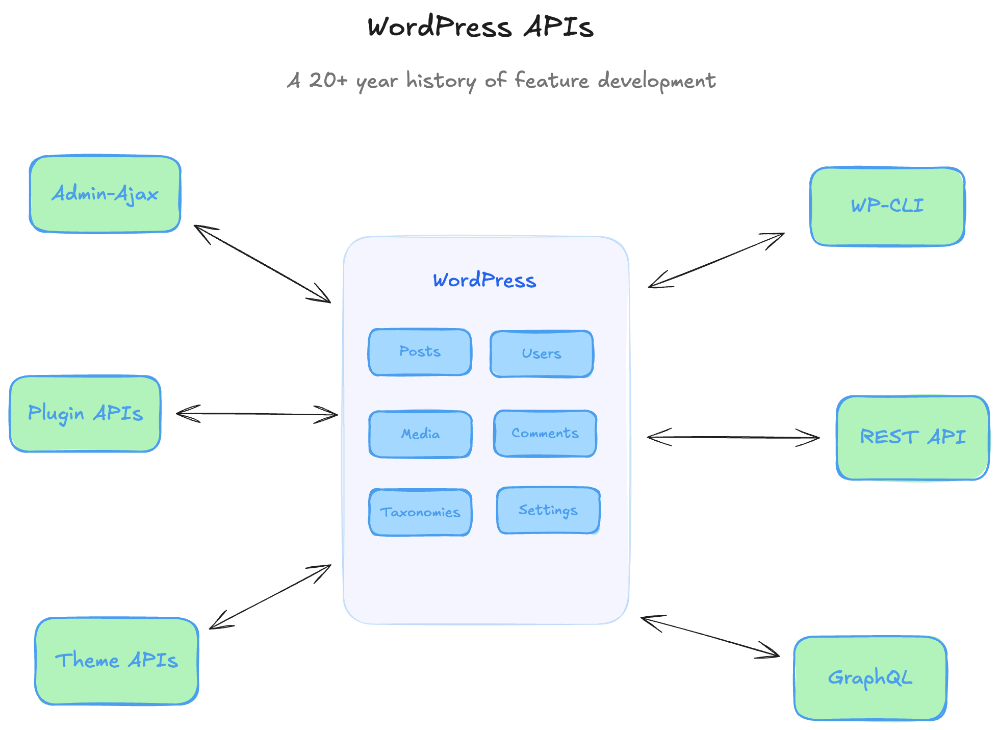
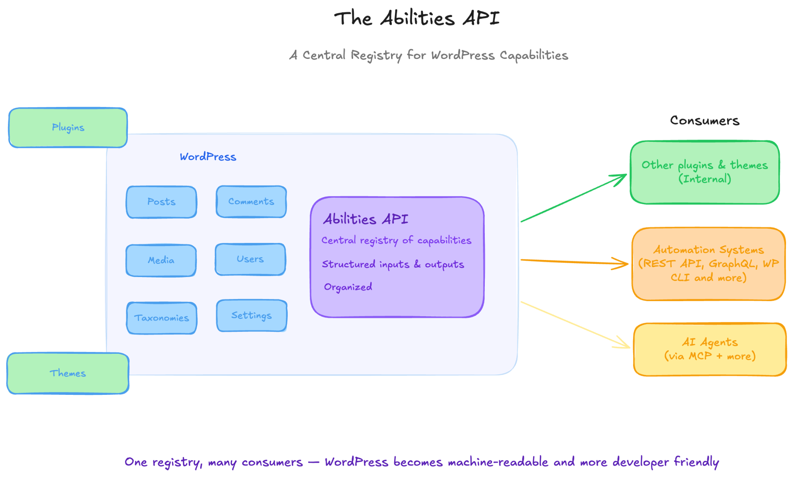
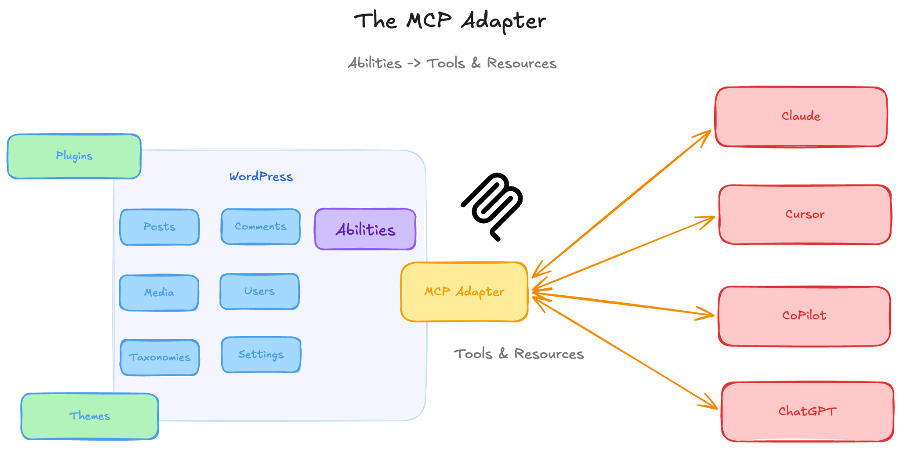
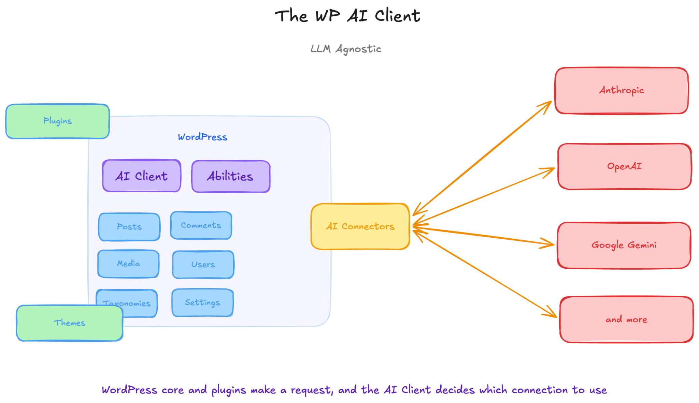

WordPress 🤝 AIA tour of the Core AI projects
Jonathan Bossenger · Developer Advocate, Automattic
Hi, I'm Jonathan
- Developer Advocate at Automattic.
- Based in Cape Town, South Africa.
- Professional AI experimenter.

The WordPress Core AI team
- Formed in May 2025.
- Accelerates and coordinates AI projects across the WordPress ecosystem.
- Core team reps from across the WordPress ecosystem.
Open building blocks
Make WordPress AI-ready without forcing a single vendor or model into Core.
Abilities API
Describe what WordPress can do.
MCP Adapter
Expose content and actions to external agents.
AI Client
Call AI providers in a standard way.
AI Experiments
Try AI features in WordPress today.
Shipping since 6.9, more to 7.3
Updates have shipped since WordPress 6.9, and more is on the roadmap toward WordPress 7.3.
01 / 04
Abilities API
The foundation for AI.
1Developers and robots like structure
Every AI feature needs a solid foundation to build on.
20+ years of WordPress APIs

Register once, use everywhere
- One registry for extenders, AI and automations.
- 20 years of open source, now with structured inputs and outputs.
- Accessible via PHP, JavaScript and the REST API.
- Part of WordPress Core since WordPress 6.9.
Next: native Abilities
A baseline set of Abilities for common site management workflows.
- A few foundational Abilities may land in WordPress 7.2.
- A useful native set is targeted for WordPress 7.3.
One registry, many consumers

02 / 04
MCP Adapter
Abilities become tools and resources.
2Abilities → tools & resources
Giving AI agents context since 2025.
The WordPress MCP Adapter
- Automatically adapts Abilities into MCP tools.
- Works with any AI agent application: chat, IDE and more.
- HTTP (web) and STDIO (local) transports.
- Not in Core (yet): install it as a Composer package or the MCP Adapter plugin.
On the road to Core
- 7.2: rapid iteration on reliability, security and usability.
- 7.3: a proposal to bring MCP into Core.Either a direct merge, or bundled so it can evolve independently.
One adapter, any agent

Learn the MCP Adapter
WordPress for the agentic web
The goal: connecting an agent to your site should take one sign-in.
Four workstreams
MCP Adapter
Agents talk to WordPress over MCP.
Abilities
What agents can do on your site.
OAuth
Authorize agents without sharing Application Passwords.
End-to-end UX
Discover, request access, perform tasks, manage or revoke.
- Foundations in 7.2, targeting 7.3.
- Get involved in #core-ai on Make WordPress Slack.
03 / 04
AI Client
Making WordPress AI aware.
3Making WordPress AI aware
One standard way for Core and plugins to talk to any AI provider.
The WordPress AI Client
- Registers AI providers for use inside WordPress.
- Fully extendable to work with any external AI provider.
- Anthropic, OpenAI and Google Gemini by default, plus community providers.
- Foundations shipped in WordPress 7.0, with the new Connectors page.
LLM agnostic

04 / 04
AI Experiments
AI features you can try today.
4The AI Experiments plugin
AI-powered features in your admin and editor. Nothing is on by default.
What's inside
Stable: image generation and editing. Everything else is an experiment you switch on.
Editor writing tools
Editorial notes & updates
Content & media
Comments
Agentic web
Site owner controls
Live demo
Let's try it together
The Core AI building blocks
Want more?
A recent wp-bench run
Latest three models from OpenAI, Anthropic and Google · 350 tests each.
agent-skills
Expert-level WordPress knowledge for AI coding assistants.
Any questions?
Thank you.
jonathanbossenger@gmail.com
jonathanbossenger.com